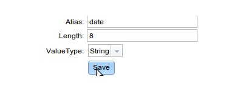
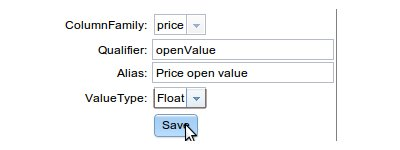
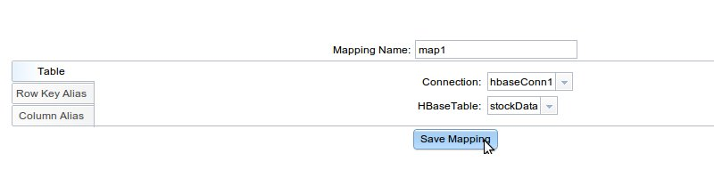

Mapping
A mapping defines the HBase schema. it describes whether your row key is a simple key or composite, what are
your column families and your qualifiers. Using aliases, you can provide user friendly names to identify the
row and column keys.
Steps to create mapping:-
Step 1: Define unique mapping name.
Step 2: There are three tabs on mapping page (Table, Row Key Alias and Column Alias). Select
'Table' tab and select unique pair of Connection and HBase Table. A mapping is specific to a hbase table.
Step 3: To Define Row Key Alias, select Row Key Alias tab and then define Alias with unique value,
also define length and select appropriate Value Type. If your rowkey is a composite, you will need multiple
aliases to define each portion of your rowkey. Save aliases after defining above.

Now you can save alias after defining above.
Step 4: To Define the Column Aliases, select Column Alias tab and then select the column family.
Define qualifier as in HBase table. The alias name should be unique. Also select appropriate Value Type.
Now you can save the aliases.

Now you can save alias after defining above.
Step 5: After defining rowKeyAlias and columnAlias, please click on Save Mapping button at the
bottom of page.
